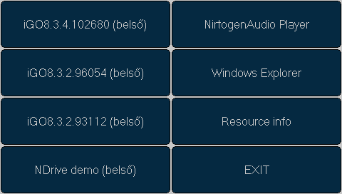
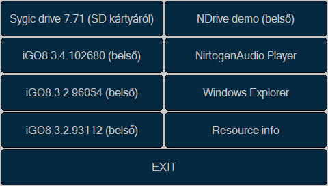

A manapság egyre népszerűbb PNA-k navigációs program indítási lehetőségei meglehetősen korlátozottak. Ezek a keszülékek az esetek jelentős részében a kínai YuanFeng Ltd termékei, így a bennük található firmware is igen hasonló. A gyártó azonban csak arra készítette fel a készüléket vezérlő szoftvert, hogy egyetlen navigációs program indítására legyen alkalmas viszonylag gyorsan és egyszerűen.
Az általam elérhető két készülék (BluePanther Diamond és Wayteq x820) a következő logikát használja a navigációs program elindításánál:
x820 esetében lehetőség van az indítandó program útvonalának meghatározására a beállításoknál. Ha itt be van állítva valami, az minden további lehetőséget felülbírál.
Ha nincs beállítva semmi (vagy az eszköz - pl BP Diamond - nem ad lehetőséget erre) a belső tárolóban (\ResidentFlash) esetleg létező shell.ini nevű file-ban megadott program indul el. Ha ez az állomány nem létezik, az SD kártya gyökerében (\SDMMC) keresi az ugyan ilyen nevű file-t, és az ebben megadott programot indítja el. Ha itt sem található shell.ini, akkor megnézi létezik-e az SD kártyán a MobileNavigator könyvtár, és abban a MobileNavigator.exe. Ha nem, akkor ezt megpróbálja a belső tárolóval is.
A fentiekből látható, hogy habár viszonylag sok lehetőségünk van az elindítandó navigációs rendszer kijelölésére, még a legnagyobb szabadságot megengedő újabb szoftverrel szerelt Wayteq készülákeknél sem ússzuk meg a barangolást a beállítások menüben ha hirtelen másik navigációs programot szeretnénk elindítani mint korábban.
A PNAMenu használatával viszont megoldható, hogy a készülék "navigáció" funkciójának aktivizálásakor egy rugalmasan, mégis egyszerűen konfigurálható menüből válaszhassuk ki a számunkra az adott pillanatban épp legmegfelelőbb programot.
A PNAMenu induláskor megpróbálja megnyitni a vele egy könyvtárban elhelyezett, vele azonos nevű, csak kiterjesztésében eltérő (.exe helyett .ini) konfigurációs file-t. A gyakorlatban ha a programot a PNAMenu könyvtárba PNAMenu.exe néven másoltuk fel, akkor az ugyan itt található PNAMenu.ini-t fogja feldolgozni mint konfigurációs állományt. Ha azonban kénytelenek vagyunk a programot a MobileNavigator könyvtárba MobileNavigator.exe néven elhelyezni, akkor a konfigurációs állomány neve is MobileNavigator.ini kell legyen szintén a MobileNavigator könyvtárban.
A konfigurációs állomány szerkezete viszonylag egyszerű: minden egyes sor egy másik állományra mutat, és tartalmazhat egy ;-vel kezdődő megjegyzést is. Ha a megadott file kiterjesztése .ini (és a file létezik), a PNAMenu ezt az állományt feldolgozza ezen szabályok szerint mielőtt a következő sorra lépne. Ha a kiterjesztés .exe, (és s file létezik), a menüben egy nyomógomb rendelődik az adott alkalmazáshoz, amit megnyomva a PNAMenu elindítja a programot majd azonnal ki is lép, a lehető legtöbb szabad memóriát biztosítva ezzel az elindított navigációs (vagy egyéb) alkalmazás számára.
Ha egy .exe kiterjesztésű állományt meghatározó sor tartalmaz megjegyzést, a hozzá tartozó nyomógomb felirata ez a megjefgyzés lesz, ha nem tartalmaz, akkor a file elérési útja és neve.
A generált menü 5 indítógombig egy oszlopot tartalmaz, efölött két oszlopba rendezi a program gombokat, hogy azok akár ujjal is könnyen eltalálhatóak legyenek.
A konfigurációs állományok lehetnek ASCII, UTF-8 vagy UCS-16 (Notepad által Unicode-ként aposztrofált) kódolásúak, magyar ő és ű betű viszont csak az utóbbi kettővel menthető el. Ilyen fájlok szerkesztése Windows alatt Notepaddel ajánlot, ez ugyanis biztosan beteszi a file elejére a kódolás automatikus felismeréséhez szükséges karaktereket (UCS16: 0xff 0xfe, UTF8: 0xef 0xbb 0xbf)
A program innen, a forráskód pedig innen tölthető le.
ini file az exe-vel azonos könyvtárban:
\ResidentFlash\iGO8.3.4.102680\iGO8.exe ;iGO8.3.4.102680 (belső) \ResidentFlash\iGO8.3.2.96054\iGO8.exe ;iGO8.3.2.96054 (belső) \ResidentFlash\iGO8.3.2.93112\iGO8.exe ;iGO8.3.2.93112 (belső) \ResidentFlash\NDrive\NDrive.exe ;NDrive demo (belső) \ResidentFlash\Nitrogen\Nitrogen.exe ;NirtogenAudio Player \Windows\Explorer.exe ;Windows Explorer \ResidentFlash\Tools\ResInfo.exe ;Resource info
A fenti kofigurációs állomány (feltéve, hogy a benne megadott összes exe kiterjesztésű állomány létezik) az alábbi menüt eredményezi:
Az újabb eszközök (a BluePanther Diamond és Zafire valamint a Wayteq x820 és x620 egészen biztosan) az SD kárta tartalmát a \SDMMC könyvtár alá csatolja a kártya behelyezésekor. Ha kiegészítjük a fenti konfigurációs fajlt a következőképpen:
\SDMMC\PNAMenu.ini \ResidentFlash\iGO8.3.4.102680\iGO8.exe ;iGO8.3.4.102680 (belső) \ResidentFlash\iGO8.3.2.96054\iGO8.exe ;iGO8.3.2.96054 (belső) \ResidentFlash\iGO8.3.2.93112\iGO8.exe ;iGO8.3.2.93112 (belső) \ResidentFlash\NDrive\NDrive.exe ;NDrive demo (belső) \ResidentFlash\Nitrogen\Nitrogen.exe ;NirtogenAudio Player \Windows\Explorer.exe ;Windows Explorer \ResidentFlash\Tools\ResInfo.exe ;Resource info
Majd az SD kártya gyökerében létrehozzuk a PNAMenu.ini állományt az alábbi tartalommal:
\SDMMC\Drive\WindowsMobile\Drive.exe ;Sygic drive 7.71 (SD kártyáról)
Akkor amennyiben a "Drive\WindowsMobile\Drive.exe" létezik a kártyán, az SD kártya behelyezése után a menü a következőre módosul:
Az SD kártya menüleírójára mutató sor (\SDMMC\PNAMenu.ini) természetesen akkor is benne maradhat a fő konfigurációs állományban, ha az SD kártyát eltávolítjuk, ilyenkor a program egyszerűen figyelmen kívül hagyja a nem létező állományt.
Így amennyiben több SD kártyán különböző navigációs szoftverrel rendelkezünk, elég minden SD kártyánk főkönyvtárában elhelyezni egy PDAMenu.ini állományt a megfelelő tartalommal, és a kártya behelyezésekor az adott program automatikusan be fog kerülni a menübe.
A PNAMenu az 1.1-es verziótójától kezdve támogatja az indítógombok színének megváltoztatását.
A színeket három paranccsal tudjuk befolyásolni, paraméterezésében azonban mindhárom színkezelő parancs megegyezik. Mindegyikük négy, szóközzel elválasztott 6 karakter hosszú paramétert vár, melyeket tizenhatos számrendszerben értelmez, és három byte-ra bont. Az első byte a kék, a második a zöld a harmadik a vörös színkomponens értékét reprezentálja.
A fentiek szerint az ff0000 például egy telített kék, a 00ff00 egy telített zöld, a 0000ff pedig egy telített vörös színt jelöl.
A négy paraméter első színhármasa a gomb alapállapotának hátérszínét, a második az alapállapot szövegének színét, a harmadik a kijelölt állapot háttérszínét, míg a negyedik a kijelölt állapot sövegszínét adja meg.
A három színkezelő parancs közül kezdjük a legegyszerűbbel: Az exitcolor bárhol elhelyezve a menüleíró fájlban, az exit gomb színét határozza meg. Amennyiben több exitcolor parancs is feldolgozásra kerül (akár másik ini fájlból is) az utolsóként feldolgozott határozza meg az exit gomb színét. Az alábbi példa sotet piros exit gombot eredmenyez, ami kattintásra világos narancssárgára vált:
exitcolor 004e98 e8e8e8 0689ff ffffff
A color parancs az őt követő összes gomb színét megváltoztatja. A tempcolor parancs annyiban különbözik tőle, hogy hatása csak a következő gombra terjed ki, utána a szín visszáll az előző értékre. A teljes színkezelés működése a lenti példán kitűnően megfigyelhető:
exitcolor 002098 e8e8e8 0660ff ffffff ;red/orange color 462c00 c8c8c8 8c5800 ffffff ;dark blue tempcolor 108000 d0d0d0 40c004 ffffff ;light green \ResidentFlash\igo8.3.4.102680\igo8.exe ;iGO8.3.4.102680 (belső) \ResidentFlash\igo8.3.2.96054\igo8.exe ;iGO8.3.2.96054 (belső) \ResidentFlash\iGO8.3.2.93112\iGO8.exe ;iGO8.3.2.93112 (belső) tempcolor 904800 c8c8c8 ff8906 ffffff ;light blue \ResidentFlash\iGO_Amigo\amigo_pna.exe ;iGO Amigo (belső) \ResidentFlash\NDrive\NDrive.exe ;NDrive demo (belső)
Mivel a színkezelő parancsol hatása nem vész el a külső leírófile feldolgozásakor, így egyszerűen meglodható például, hogy az SD kártyán elhelyezett menüleíró által generált indítógombok más színűek legyenek mint a fő menüleíróból generaltak anélkül, hogy az SD kártyáról becsatolt leíróban bármit is változtatnánk. Az SD kártya leírójéra hivatkozás előtt egyszerűen változtassuk meg a háttérszínt (a tmpcolor is használható ha a kártya menüleírójából származó gombok kozül az elsőnek más színt szeretnénk adni), majd a hivatkozás után állítsuk vissza.
Az 1.2-es verzióval két új lehetőség érkezett a PNAMenube.
Már a legelső publikus verzióban (1.0) is lehetséges volt külső menüleíró fájlok feldolgozására, az 1.2-es verziótól kezdve azonban ezeket a külső leírókat akár külön oldalon is megjeleníthetjük. A korábbi, beágyazott feldolgozás tovabbra is lehetséges, a külon oldalra helyezest a submenu paranccsal érhetjük el. Az almenü színei az őt indító menü végén érvényben lévő színekkel egyeznek meg. Az alábbi pálda az SD kártya gyökerében található PNAMenu.ini állománynak létrehoz a főmenüben egy "SD kártya" feliratú indítógombot, amire ha a felhasználó rábök, a \SDMMC\PNAMenu.ini állományban leírt menü egy új oldalon jelenik meg:
submenu \SDMMC\PNAMenu.ini ;SD kártya
A gomb természetesen csak akkor jelenik meg, ha az állomány létezik, azaz ha van SD kártya behelyezve és a gyökérkönytárában ott a PNAMenu.ini állomány. Bonyolultabb példát a masik frissen érkezett parancs tárgyalása után nézünk.
Bár nem egy eget rengető újítás, de az 1.2-es veriótól kezdve az exit gomb felirata is megváltoztatható. A megváltoztatott szöveg a kilépésig érvényben marad, tehát az almenükben is az új szöveg lesz az exit gomb felirata (hacsak az almenüben újra meg nem változtatjuk azt).
A PNAMenu.exe az eszköz belső tárolójában, a PNAMenu könyvtárban található. Ugyan itt (\ResidentFlash\PNAMenu\) található az alábbi menüleíró PNAMenu.ini néven:
color 462c00 c8c8c8 8c5800 ffffff ;dark blue tempcolor 904800 c8c8c8 ff8906 ffffff ;light blue submenu \SDMMC\PNAMenu.ini ;SD kártya color 462c00 c8c8c8 8c5800 ffffff ;dark blue tempcolor 108000 d0d0d0 40c004 ffffff ;light green \ResidentFlash\igo8.3.4.102680\igo8.exe ;iGO8.3.4.102680 (belső) \ResidentFlash\igo8.3.2.96054\igo8.exe ;iGO8.3.2.96054 (belső) \ResidentFlash\iGO8.3.2.93112\iGO8.exe ;iGO8.3.2.93112 (belső) \ResidentFlash\NDrive\NDrive.exe ;NDrive demo (belső) color 404040 c8c8c8 808080 ffffff submenu \ResidentFlash\PNAMenu\Tools.ini ;Eszközök exitcolor 002098 e8e8e8 0660ff ffffff ;red/orange exitname Bezár color 462c00 c8c8c8 8c5800 ffffff ;az almenü színe, amennyiben nincs szín megadva az almenü leírójában
Ha a PNAMenu.ini mellett található egy Tools.ini nevú file, valamint van SD kártya az eszközben aminek a gyökérkönyvtárában található egy PNAMenu.ini nevű állomány, a főmenü a következőképpen fog kinézni:
Az "SD kártya" gombra bökve egy új menü oldal jelenik meg, aminek a tartalmát az SD kártya gyökerében (\SDMMC\) elhelyezett PNAMenu.ini állomány írja le:
color 462c00 c8c8c8 8c5800 ffffff tempcolor 984e00 c8c8c8 ff8906 ffffff \SDMMC\Igo_Amigo\amigo_pna.exe ;iGO Amigo (SD kártyáról) tempcolor 209800 d0d0d0 48ff06 ffffff \SDMMC\igo8.3.4.102680\igo8.exe ;iGO8.3.4.102680 (SD kártyáról) \SDMMC\Drive\WindowsMobile\Drive.exe ;Sygic drive 7.71 (SD kártyáról)
Az "Eszközök" gomb megnyomására felbukkanó menü tartlamáért pedig a PNAMenu.exe-vel megegyezo konyvtarban (\ResidentFlash\PNAMenu\) elhelyezett Tools.ini nevű file felelős:
color 404040 c8c8c8 808080 ffffff \ResidentFlash\Nitrogen\Nitrogen.exe ;Nirtogen Zenelejátszó \Windows\Explorer.exe ;Windows CE felület \ResidentFlash\Tools\ResInfo.exe ;Erőforrás információk
A PNAMenu 2.0-ás verziója számos olyan új funkciót vezet be, amik a gyári menürendszer kiválthatóságához szükségesek. Ezek használatával teljesen lecserélhetjük készülékünk nehézkes és memóriapazarló gyári menüjét a PNAMenu-re.
© 2009, Bódy Attila - A program szabadon használható, terjeszthető és módosítható a GPL v3 feltételei szerint. Hibajelentések, nyavajgások, a spambait[pont]hu[kukac]gmail[pont]com címre küldendők